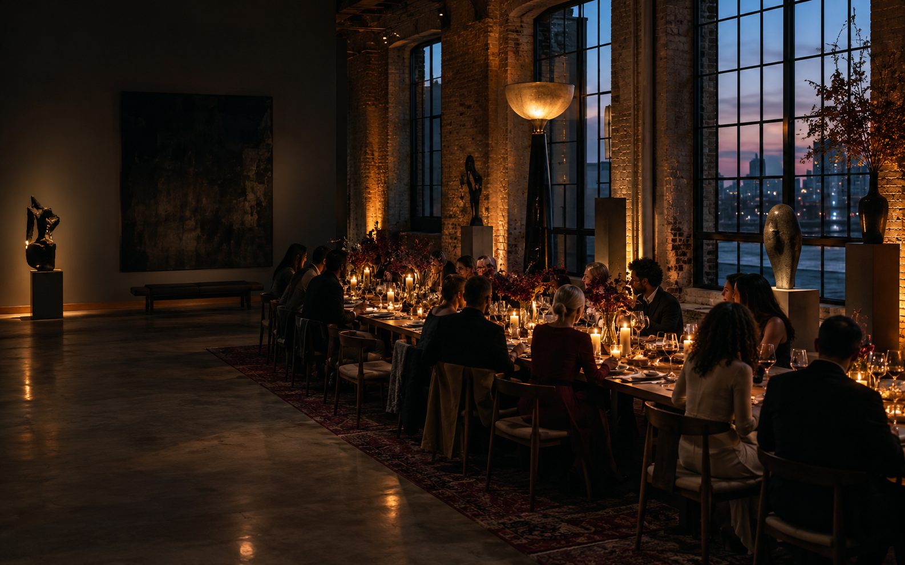

DINNER / 19:30

A HOUSE FOR THE CURIOUS
Nights worth remembering.
Small gatherings, long tables and ideas that stay with you. Morrow House makes space for a different kind of evening.
Enter the calendar ↓02
THE HOUSE
Not a restaurant.
Not a venue.
Something between.
Morrow House is a rotating home for conversations, performances and shared tables. Every season, a new group of people, makers and questions takes over the room.
Find your way in ↗THE CALENDAR
Choose your evening.
2026
03
FROM THE JOURNAL
READ / 06 MIN
Leave room for the unexpected.
Every good evening has a moment that was never on the schedule. We asked the people who make Morrow what they leave room for.
Read the journal ↗THE NEXT EVENING
Come as you are.
Leave with a story.
Join the list for first access to new dinners, salons and one-night-only gatherings.
04 / 04